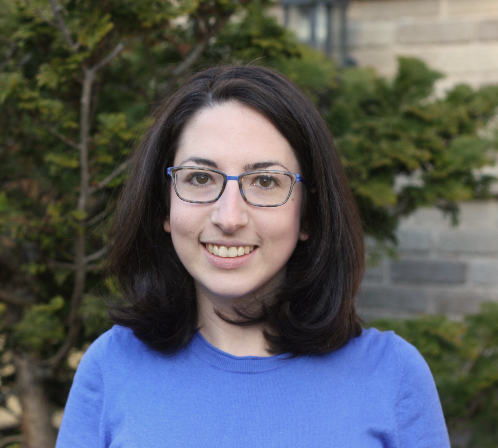
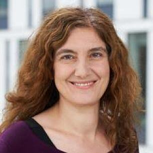

Keynotes
We are lucky to have two great keynotes this year! Titles and abstracts will follow soon.
Rachel Rudinger

Rachel Rudinger is an Assistant Professor of Computer Science at the University of Maryland, College Park. Previously, she obtained her PhD at John Hopkins University and spent a year as a Young Investigator at AI2 in Seattle. Her research focuses on problems in natural language understanding, including knowledge acquisition from text, commonsense inference, computationally-tractable semantic representations, and semantic parsing. She is also a contributing member of the Decompositional Semantics Initiative.
Mirella Lapata
 Mirella Lapata is professor of natural language processing in the School of Informatics at the University of Edinburgh. Her research focuses on getting computers to understand, reason with, and generate natural language. She is the first recipient (2009) of the British Computer Society and Information Retrieval Specialist Group (BCS/IRSG) Karen Sparck Jones award, a Fellow of the ACL and the Royal Society of Edinburgh. She has also received best paper awards in leading NLP conferences and has served on the editorial boards of the Journal of Artificial Intelligence Research, the Transactions of the ACL, and Computational Linguistics. She was president of SIGDAT (the group that organized EMNLP) in 2018.